In this project, I made a modified checker AI. The rule of a modified checker is like this;
*RULES*
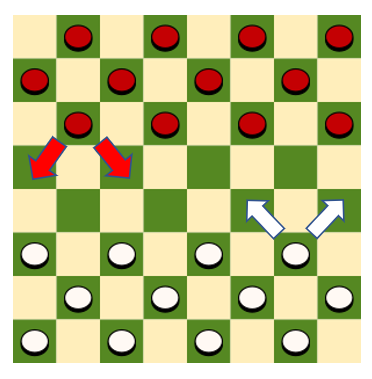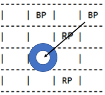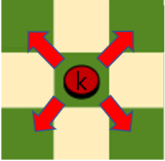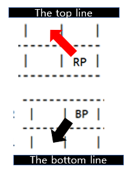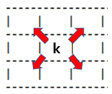
This project focused on making AI which can play against human by using mini max tree algirithm.
Score can be the indicator of winning and losing, making an appropriate score system affects overall performance.
In this algorithm, Zerosum is used. Score is expressed in one score, if Black is winning then score gets postivie value, if not, score gets negative one. If it is equals, then score is 0.
(my method)If black pawn moves forward, then add 3. If red, subtract 3 from the total score.King worth 30 points. All pawns have a inital value of 10.
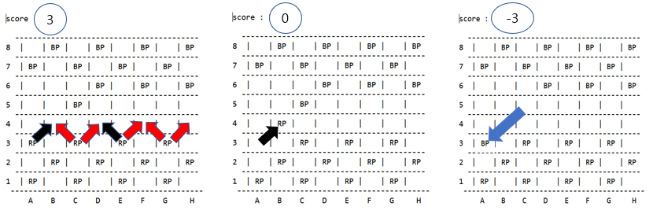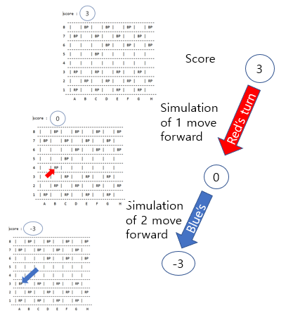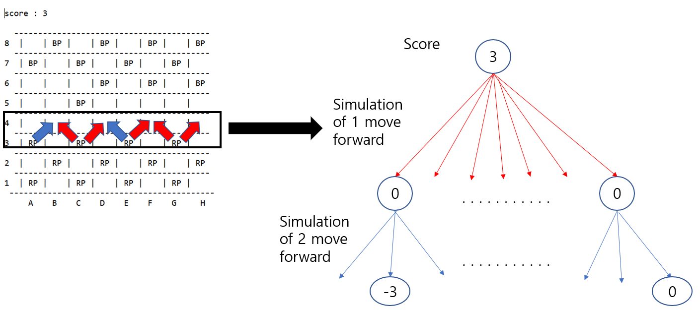
There are some to consider when you choose something to move from the board.
* mini-max tree
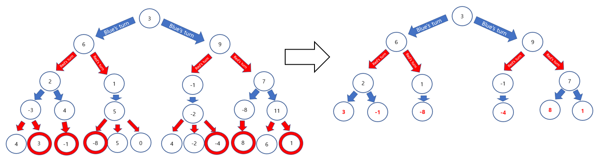
*alpha beta pruning


 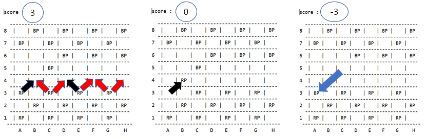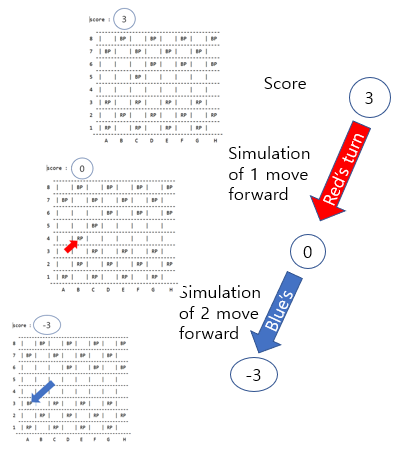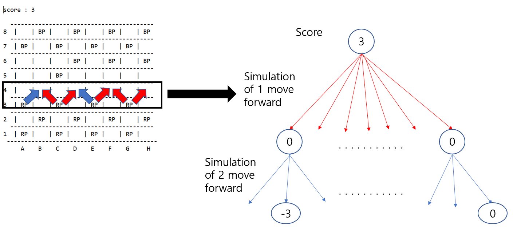
There are some to consider when you choose something to move from the board.
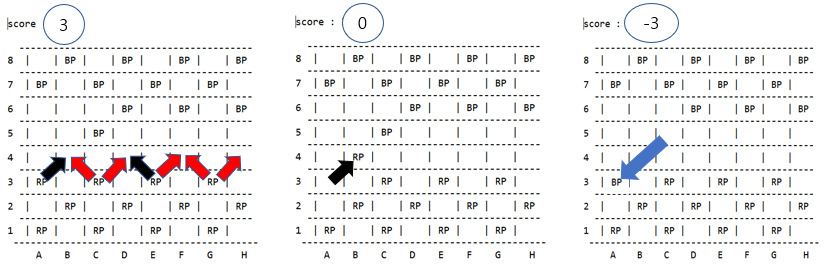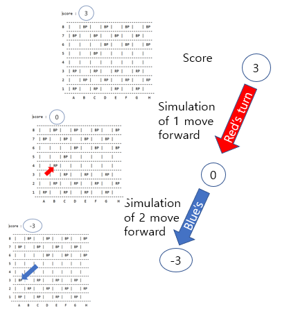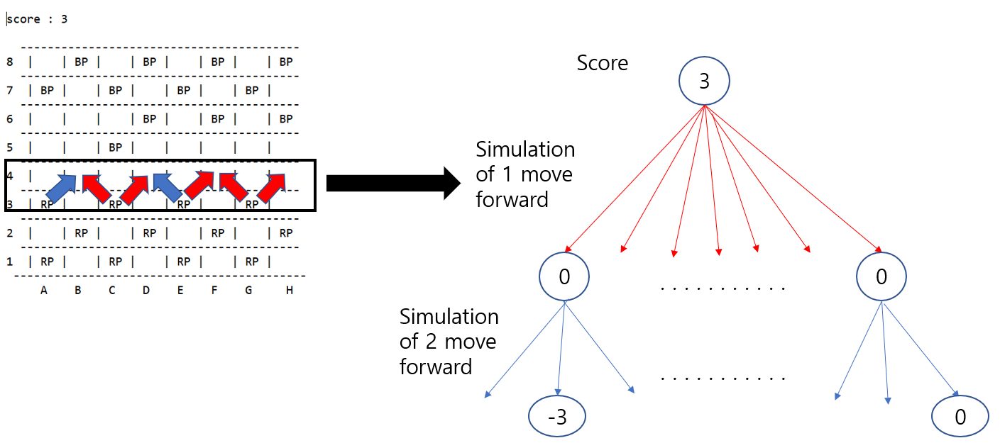
There are some to consider when you choose something to move from the board.

 * mini-max tree
* mini-max tree

 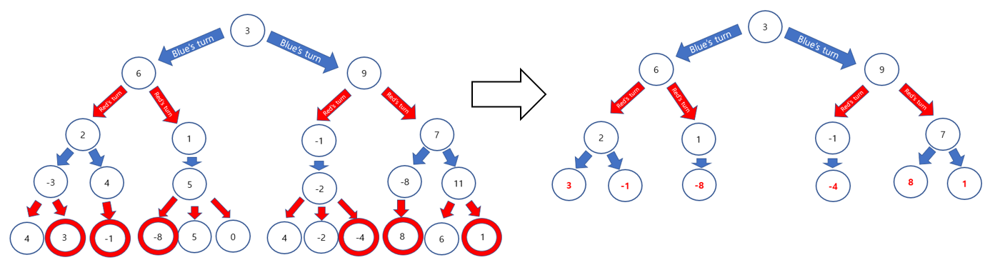
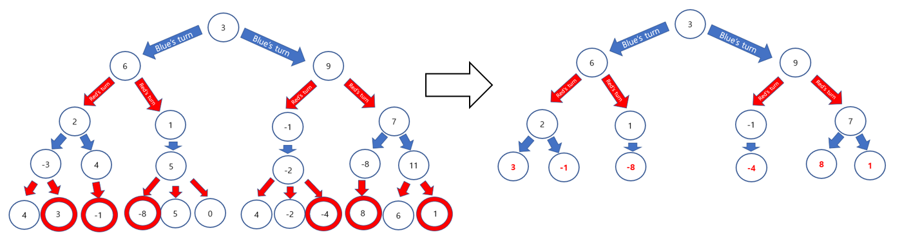


 *alpha beta pruning
*alpha beta pruning